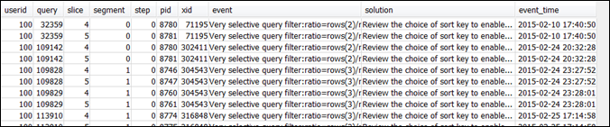

Les traductions sont fournies par des outils de traduction automatique. En cas de conflit entre le contenu d'une traduction et celui de la version originale en anglais, la version anglaise prévaudra.
Révision des alertes de requêtes
Pour utiliser la table système STL_ALERT_EVENT_LOG afin d’identifier et de corriger d’éventuels problèmes de performances avec votre requête, procédez comme suit :
-
Exécutez la commande suivante pour déterminer l’ID de votre requête :
select query, elapsed, substring from svl_qlog order by query desc limit 5;Examinez le texte de la requête tronquée dans le champ
substringpour déterminer quelle valeur dequerysélectionner. Si vous avez exécuté la requête plusieurs fois, utilisez la valeur dequeryde la ligne avec la valeur deelapsedinférieure. Il s’agit de la ligne de la version compilée. Si vous avez exécuté un grand nombre de requêtes, vous pouvez augmenter la valeur utilisée par la clause LIMIT utilisée pour vous assurer que votre requête est incluse. -
Sélectionnez des lignes dans STL_ALERT_EVENT_LOG pour votre requête :
Select * from stl_alert_event_log where query = MyQueryID; -
Evaluez les résultats de votre requête. Utilisez le tableau suivant pour rechercher des solutions possibles aux problèmes que vous avez identifiés.
Note
Toutes les requêtes ne contiennent pas des lignes dans STL_ALERT_EVENT_LOG, seules celles ayant des problèmes identifiés.
Problème Valeur de l’événement Valeur de la solution Solution recommandée Les statistiques des tables de la requête sont manquantes ou ne sont pas à jour. Statistiques du planificateur de requête manquantes Exécuter la commande ANALYZE veuillez consulter Statistiques de table manquantes ou obsolètes. Le plan de requête contient une jointure de boucle imbriquée (la jointure la moins optimale). Jointure de boucle imbriquée dans le plan de requête Vérifiez les prédicats de jointure pour éviter les produits cartésiens veuillez consulter Boucle imbriquée. L’analyse a ignoré un certain nombre de lignes qui sont marquées comme supprimées, mais pas vidées, ou des lignes qui ont été ajoutées mais pas la validées. Analyse d’un grand nombre de lignes supprimées Exécutez la commande VACUUM pour récupérer l’espace supprimé veuillez consulter Lignes fantômes ou non validées. Plus de 1 000 000 de lignes ont été redistribuées pour une jointure par hachage ou une agrégation. Distribution d'un grand nombre de lignes sur le réseau : des RowCount lignes ont été distribuées afin de traiter l'agrégation Vérifiez le choix de clé de distribution pour colocaliser la jointure ou l’agrégation veuillez consulter Distribution des données sous-optimales. Plus de 1 000 000 de lignes ont été diffusées pour une jointure par hachage. Diffusion d’un grand nombre de lignes sur le réseau Vérifiez le choix de clé de distribution pour colocaliser la jointure et pensez à utiliser des tables distribuées veuillez consulter Distribution des données sous-optimales. Un style de redistribution DS_DIST_ALL_INNER a été indiqué dans le plan de requête, ce qui force une exécution en série, car la totalité de la table interne a été redistribuée sur un seul nœud. DS_DIST_ALL_INNER pour la jointure par hachage dans le plan de requête Vérifiez le choix de stratégie de distribution pour distribuer la table interne, plutôt qu’externe veuillez consulter Distribution des données sous-optimales.